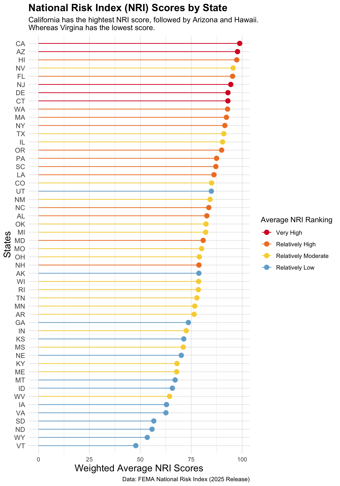
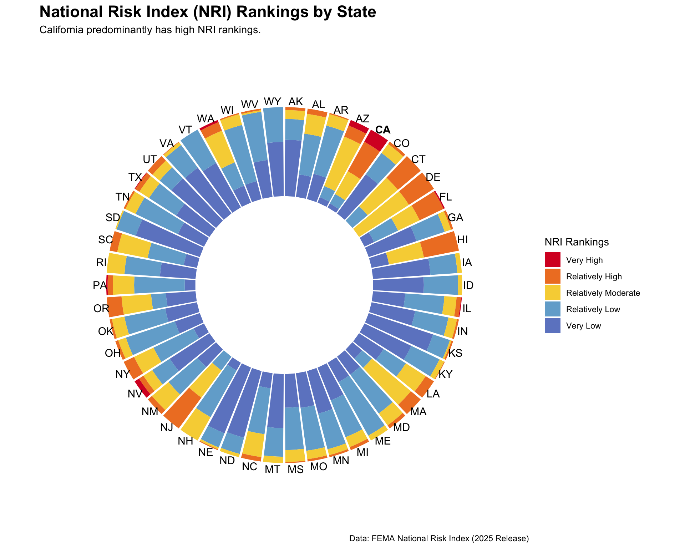

# Load the Libraries
library(tidyverse)
library(dplyr)
library(janitor)Data Visualization HW2
FEMA National Risk Index scores
Understanding how FEMA National Risk Index scores for counties in California compare to those in other states.
Load Data
nat_ri <- read_csv(here::here("data", "National_Risk_Index_Counties.csv")) %>%
clean_names()Subset Data
Select only necessary columns for NRI data visualization(s) and change datatypes.
# Select to only necessary columns
nat_ri_subset <- nat_ri %>%
select(national_risk_index_id, population_2020, state_name_abbreviation, area_sq_mi, national_risk_index_value_composite, national_risk_index_score_composite,national_risk_index_state_percentile_composite, national_risk_index_rating_composite) %>%
rename(state = state_name_abbreviation)
# NRI Ratings = factor
order <- c("Insufficient Data", "Very Low", "Relatively Low", "Relatively Moderate", "Relatively High", "Very High")
nat_ri_subset$national_risk_index_rating_composite <- factor(nat_ri_subset$national_risk_index_rating_composite,
levels = order)Find the average NRI scores (weighted and non-weighted) and the corresponding average ranking for each state.
# Means NRI scores and rankings for each state
nat_risk_avg <- nat_ri_subset %>%
filter(state %in% state.abb # Select only states (not terrtories)
) %>%
group_by(state) %>%
summarise(
avg_score = mean(national_risk_index_score_composite, na.rm = TRUE), # Mean score for each state
weighted_avg_score = weighted.mean(national_risk_index_score_composite, # Mean score for each state weight w/ pop
population_2020, na.rm = TRUE),
avg_percentile = mean(national_risk_index_state_percentile_composite, # Mean percentile for each state
na.rm = TRUE)
) %>%
mutate(ranking = factor( # Using avg_percentile to find average ranking per state
case_when( # The case_when ranges + labels are from 'National Risk Index v1.20 Technical Document'
avg_percentile >= 80 ~ "Very High",
avg_percentile > 60 ~ "Relatively High",
avg_percentile > 40 ~ "Relatively Moderate",
avg_percentile > 20 ~ "Relatively Low",
avg_percentile > 0 ~ "Very Low",
TRUE ~ NA),
levels = c("Very High", "Relatively High", "Relatively Moderate", "Relatively Low","Very Low")
),
# Opacity levels were not used for this data viz
opacity_val_percentile = scales::rescale(avg_percentile, to = c(0.3, 1)), # opacity for avg_percentile
opacity_val_score = scales::rescale(weighted_avg_score, to = c(0.3, 1)) # opacity for weighted_avg_scores
) Lollipop Graph
# Colors
ranking_colors <- c("#d80a29", "#ef802b", "#f7d342", "#72ADD2", "#6E87CA")
# Lollipop of avg scores weighted with population for each state
ggplot(nat_risk_avg) +
geom_point(aes(y = reorder(state, weighted_avg_score), # reorder states by `weighted_avg_score`
x = weighted_avg_score,
color = ranking),
size = 3) +
geom_linerange(aes(y = state, # Plot lines
xmin = 0,
xmax = weighted_avg_score,
color = ranking),
size = 0.5) +
scale_color_manual(values = ranking_colors) +
theme_minimal() +
scale_y_discrete(expand = expansion(mult = 0.02)) +
labs(title = "National Risk Index (NRI) Scores by State",
x = "Weighted Average NRI Scores",
y = "States",
color = "Average NRI Ranking",
subtitle = "California has the hightest NRI score, followed by Arizona and Hawaii.\nWhereas Virgina has the lowest score.",
caption = "Data: FEMA National Risk Index (2025 Release)") +
theme(
axis.text.y = element_text(size = 10),
axis.title = element_text(size = 14),
plot.title = element_text(size = 15,
face = "bold"))
# Save plot
ggsave(here::here("figs", "nri_lollipop_plot.png"), width = 7, height = 10)Circle Proportional Bar Chart
Find proportion of ranking counts by state.
# Subset data - proportion of counts per ranking level pr state
st_ratings <- nat_ri_subset %>%
count(state, national_risk_index_rating_composite, name = "count") %>% # Counts of ranking values per state
group_by(state) %>%
mutate(percentage = count / sum(count) * 100) %>% # Proportion by state
ungroup()
# Factor rankings (opposite order of before)
st_ratings$national_risk_index_rating_composite <- factor(st_ratings$national_risk_index_rating_composite,levels = rev(order))Create the labels that will be used in the plot.
# Label data
label_data <- st_ratings %>%
filter(state %in% state.abb, # filter for just states
national_risk_index_rating_composite != "Insufficient Data", # rid of Insufficient data
!state == "CA") %>% # Not include CA
group_by(state) %>%
summarize(total=sum(percentage)) # Used for the y value for the geom_text
ca_label_data <- st_ratings %>%
filter(state == "CA") %>% # filter for CA
group_by(state) %>%
summarize(total=sum(percentage)) # Used for the y value for the geom_text Create the plot!
# Graph - Proportional Circle Bar Chart
st_ratings %>%
filter(state %in% state.abb, # Filter for just states
national_risk_index_rating_composite != "Insufficient Data") %>% # rid of Insufficient data
ggplot(mapping = aes(x=as.factor(state),
y=percentage,
fill = national_risk_index_rating_composite)) +
geom_bar(stat="identity") + # Making it stacked
geom_text(data = label_data, # Add states (not CA) labels
mapping = aes(x = state, y = total + 7, label = state, fill = NULL),
hjust = 0.5,
size = 4) +
geom_text(data = ca_label_data, # Add and bold CA label
mapping = aes(x = state, y = total + 7, label = state, fill = NULL),
hjust = 0.5,
size = 4,
fontface = "bold") +
ylim(-100,120) + # Limits on y axis
scale_fill_manual(values = ranking_colors) +
coord_polar(start = 0) + # making it a circle
theme_minimal() +
theme(
axis.text = element_blank(), # Rid of axis titles + text & grid line
axis.title = element_blank(),
panel.grid = element_blank(),
plot.title = element_text(size = 17,
face = "bold")
#plot.margin = unit(rep(-1,4), "cm")
) +
labs(fill = "NRI Rankings",
title = "National Risk Index (NRI) Rankings by State",
subtitle = "California predominantly has high NRI rankings.",
caption = "Data: FEMA National Risk Index (2025 Release)")
# Save plot
ggsave(here::here("figs", "nri_stackedPropBar_plot.png"), width = 7, height = 7)Data Visualization Questions
What are your variables of interest and what kinds of data (e.g. numeric, categorical, ordered, etc.) are they (a bullet point list is fine)?
Column Name Refers To Data Type State State acronyms Categorical national_risk_index_value_composite States values for risk and expected annual loss from natural hazards each year Numeric national_risk_index_score_composite States individual NRI scores, given relative to NRI values. Numeric
Bounded: [0,100]
national_risk_index_rating_composite 5 qualitative categories describing the community’s Value in comparison to all other communities at the same level. Categorical (ordinal) national_risk_index_state_percentile_composite National percentile ranking of the community’s component Value. Numeric
Percentages [0,100]
How did you decide which type of graphic form was best suited for answering the question? What alternative graphic forms could you have used instead? Why did you settle on this particular graphic form?
The biggest consideration when choosing a graphic form was how to display all 50 states. 50 values is a lot of data for one visualization. Therefore, the lollipop graph was appealing because of the simplistic look. A typical bar chart, instead of a lollipop plot, would be overbearing and would draw the viewer’s eye to the center of the bars instead of the data values themselves. Furthermore, I was fascinated by the categorical rankings because it used reader-friendly words to describe numbers (the values/scores). Thus, I made the proportional circle bar chart to show how the states’ communities were being categorized. I decided on the circle bar chart because plotting 50 states creates a lot of bars. The circle aspect allows the chart to be more visually appealing. At first, the chart was not proportional; it was count data. This made Texas’s data look insane. Therefore, to account for each states varying counties numbers, I made the chart proportional.
Summarize your main finding in no more than two sentences.
California’s National Risk Index (NRI) values are unusually high compare to other US states’ NRI scores.
What modifications did you make to this visualization to make it more easily readable?
Spacing and labels are extremely tedious and time consuming. However, they make visualizations much more readable. For instance, instead of easily “turning on” the y-axis (which had the corresponding state names) in the circle bar chart, I created a separate
label_datadata frame with the state names. This allowed me to usegeom_textto manually control and refine the labels, making the visualization clearer and more informative.Is there anything you wanted to implement, but didn’t know how? If so, please describe.
I wanted to bold just the CA label in the lollipop chart, but I could not figure out how to just bold the one Y-axis label without making complicated (I didn’t want to use
gghighlightand grey the other states out). Also, for practice, I tried the choropleth map withgeom_sf. I was having a difficult time showing state differences with the color parameters.The freedom in this assignment was awesome. I really enjoyed this homework!